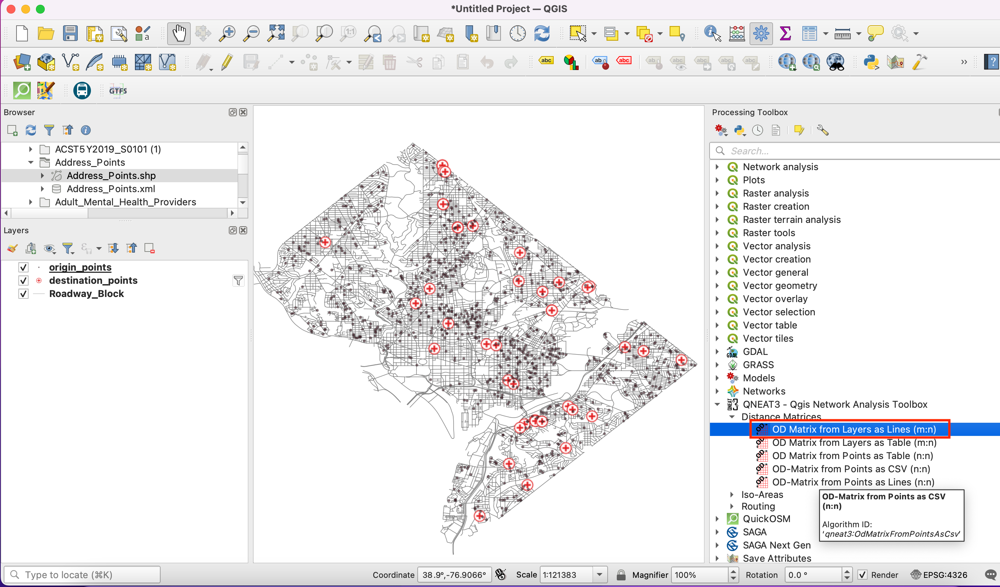

Mozaičenje in obrezovanje rastrov (QGIS3)¶
V tem učbeniku so predstavljene osnovne tehnike dela z rastri v QGIS, kot sta mozaičenje in izrezovanje.
Pregled naloge¶
Za Šrilanko bomo prenesli višinske podatke v obliki ploščic SRTM, jih združili in nastali mozaik pripeli na državno mejo.
Česa se bomo še naučili¶
Uporabe upodobitvenega programa Hillshade za vizualizacijo podatkov o nadmorski višini.
Pridobivanje podatkov¶
Land Processes Distributed Active Archive Center (LP DAAC) zagotavlja NASA Shuttle Radar Topography Mission (SRTM) Global 1 arc second podatkovni niz v obliki višinskih delov (tile).
Enostaven vmesnik za prenos delov za določeno območje je 30-Meter SRTM Tile Downloader Dereka Watkinsa. Prenesite posamezne dele SRTM, ki pokrivajo Šrilanko. Upoštevajte, da boste za prenos podatkov potrebovali brezplačen račun Earth Data.

We will also need the Admin 0 - Countries shapefile from Natural Earth.
Kopijo podatkovnih nizov lahko neposredno prenesete s spodnjih povezav:
Vir podatkov [SRTM] , [NATURALEARTH]
Postopek¶
Odprite QGIS in poiščite prenesene datoteke na plošči Browser. Razširite posamezne datoteke zip, da se prikažejo datoteke
.hgt. Držite tipko Ctrl in izberite vse posamezne datoteke. Ko so izbrane, jih povlecite na platno.

Na plošči Layers se naloži 11 slojev, ki so prikazani na platnu. Te posamezne plasti bomo združili v en sam mozaik. Pojdite na .

Poiščite in poiščite orodje . Z dvoklikom ga zaženite.

V pogovornem oknu Merge kliknite gumb … poleg Input layers. Kliknite Select All (izberi vse), da izberete vse posamezne plasti.

Kot je navedeno v podrobnostih o podatkovni plasti <https://lpdaac.usgs.gov/products/srtmgl1v003/>`_, je tip vhodnih podatkov 16-bit signed integer. Da bi ohranili celovitost podatkov, moramo za združeno plast ohraniti isti podatkovni tip. Izberite
Int16kot Output data type. Tudi privzeti format izhodnih podatkov je GeoTiff. Datoteke GeoTiff so lahko zelo velike, če niso stisnjene. Kot Profile izberiteHigh Compression. Kliknite Run.

Ko se obdelava konča, se na ploščo Layers doda nova plast
OUTPUT. Če plast ni na vrhu sklada, jo izberite in povlecite na vrh plošče Layers.

Videli boste, da sloj
OUTPUTvsebuje združene višinske podatke iz posameznih vhodnih ploščic. Privzeta vizualizacija prikazuje samo vrednosti pikslov v razponu od 0-255. Naši podatki pa vsebujejo piksle z vrednostmi od -14 do 2371, zato je upodobitev nizkokontrastna. Spremenimo jo na boljšo vizualizacijo. Kliknite gumb Open the layer Styling panel (odpri ploščo za oblikovanje slojev) na plošči Layers (sloje).

Na plošči Layer Styling kliknite spustno okno Render type in izberite renderer
Hillshade. Ta možnost upodabljanja je še posebej primerna za podatke o nadmorski višini.

Druga pogosta operacija pri delu z rastri je pripenjanje rastra na območje, ki vas zanima. V tem učbeniku bomo združeni sloj pripeli na državno mejo Šrilanke. Poiščite preneseno datoteko
ne_10m_admin_0_countries.zipin jo razširite. Datotekone_10m_admin_0_countries.shppovlecite na platno.

Izberite novo dodane plasti
ne_10m_admin_0_countriesna plošči Layers. Kliknite gumb Select Features by area or single click (Izberi elemente po območju ali z enim klikom) v orodni vrstici Attributes Toolbar (Orodna vrstica Atributi). Ko je izbran, kliknite poligon za Šrilanko, da ga izberete.

Ohranite izbor, kot je, in odprite . Poiščite orodje . Z dvojnim klikom ga zaženite.

V pogovornem oknu Clip Raster by Mask Layer nastavite
OUTPUTkot Input Layer. Izberitene_10m_admin_0_countrieskot Mask layer` in potrdite potrditveno polje Selected features only`. Vnesite0,0000kot Assign a specified nodata value to output bands. Kot prej izberiteHigh compressionkot Profile. Kliknite Run.

Na ploščo Layers bo dodana nova plast
OUTPUT. Na tej točki bo morda težko videti izhod, ker imamo vidnih preveč prekrivajočih se slojev. Kliknite gumb Manage Map Themes na plošči Layers in izberiteHide All Layers.

Vključite samo zadnjo plast
OUTPUTin jo oblikujte z prikazomHilshadekot prej.

Združeni in obrezani izhodni sloj višin za Šrilanko je pripravljen.

If you want to give feedback or share your experience with this tutorial, please comment below. (requires GitHub account)